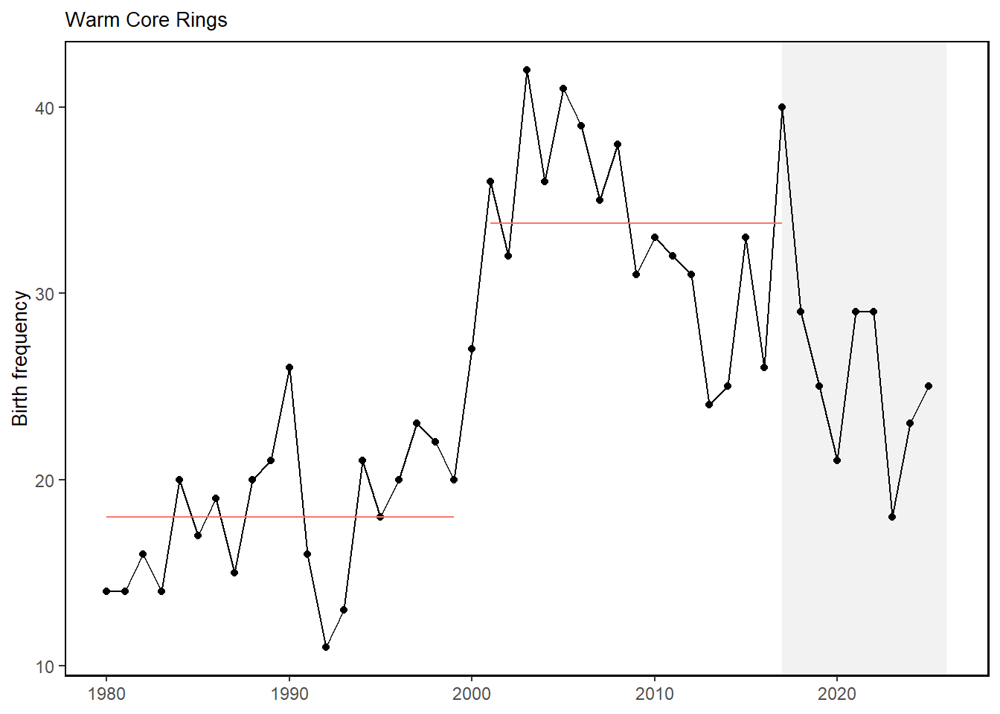

52 Warm Core Rings
Last updated February 20, 2025
Description: Number of warm core rings produced annually by the Gulf Stream off the Northeast US
Contributor(s): Avijit Gangopadhyay
Affiliations: UMass
Indicator Family:
Indicator Category:
Synthesis Theme:
52.1 Introduction to Indicator
Warm core rings are eddies formed from Gulf Stream meanders that transport warm Gulf Stream water into the cooler waters of the slope sea just off the Northeast US continental shelf. These rings transport both warm water and associated plankton and fish from the Gulf Stream towards the shelf and may form important habitat for oceanic fishery species, such as Illex squid. The indicator presented here extends published work [83]; with updated counts of warm core rings.
52.2 Key Results and Visualizations
Prior to 2000, an average of 18 warm core rings were formed by the Gulf Stream off the Northeast US shelf. From 2000-2017, an average of 33 warm core rings were formed. Annual numbers of warm core rings have been updated using the same methods for each year since 2017, but the regime shift analysis has not been updated.
Mid-Atlantic

New England
#> NULL52.3 Implications
The increased instability of the Gulf Stream position and warming of the Slope Sea may be connected to the regime shift increase in the number of warm core rings formed annually in the Northwest Atlantic [83,84]. When warm core rings and eddies interact with the continental slope they can transport warm, salty water to the continental shelf [85], which can alter the habitat and disrupt seasonal movements of fish [86]. Transport of offshore water onto the shelf is happening more frequently [86,87] and can contribute to marine heatwaves in the Mid-Atlantic Bight [85,88] as well as the movement of shelf-break species inshore [86,89,90].
52.4 Indicator statistics
Spatial scale: Full shelf
Temporal scale: Annual
Variable definitions
52.5 Get the data
Point of contact: Avijit Gangopadhyay avijit.gangopadhyay@umassd.edu
ecodata dataset: ecodata::wcr
Tech Doc link: https://noaa-edab.github.io/tech-doc/wcr.html
52.5.1 Public Availability
Source data are NOT publicly available.
52.5.2 Accessibility Constraints
Please contact Kimberly.Hyde@noaa.gov